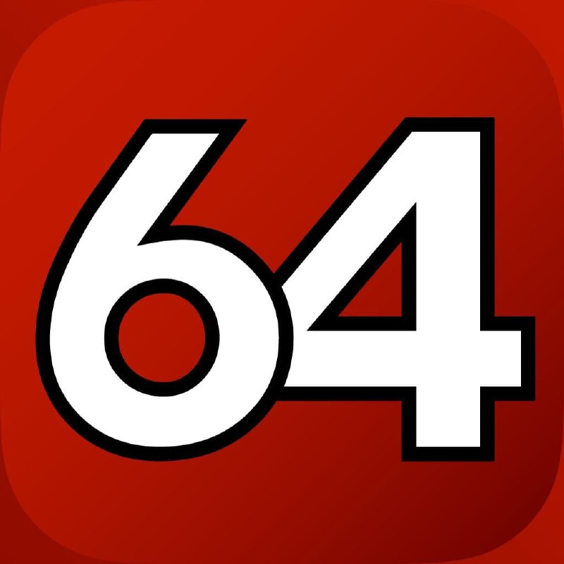

DRAM и CPU
 LinX
LinX
Тяжелый стресс-тест, дающий нетипично высокую нагрузку на систему и позволяющий почти мгновенно выявить нестабильность вашего разгона. Многие "рекорды" разгонов с форумов не пройдут и пяти минут этого теста. LinX - это графическая оболочка для утилиты Linpack Xtreme, которую разработал Dualist
Скачать
OCCT
Еще один тест, экстремально нагружающий систему, на этот раз комплексный, подойдет не только для тестирования процессора, но и памяти, видеокарты и блока питания.
Скачать

AIDA64
Эта утилита - целый комбайн, собирающий информацию о вашей системе, не только об аппаратных средствах, но и о программных. Хотите узнать, когда установлена ваша Windows или все параметры вашего монитора - AIDA64 покажет все. Есть и тесты производительности, в которых можно сравнить вашу систему с другими, и тесты стабильности, довольно щадящие, что позволяет использовать их на любой системе. Но не думайте, что AIDA64 - для новичков, оверклокеры при разгоне ОЗУ на нашем форуме меряются силами именно с помощью AIDA64 Cache & Memory Benchmark.
Скачать
HWiNFO
Утилита HWiNFO стала в последние годы примером того, какими должны быть утилиты для мониторинга - компактными, ненавязчивыми, собирающими всю информацию, какую может дать система. И конечно, с постоянными обновлениями, приносящими поддержку нового "железа".
Скачать